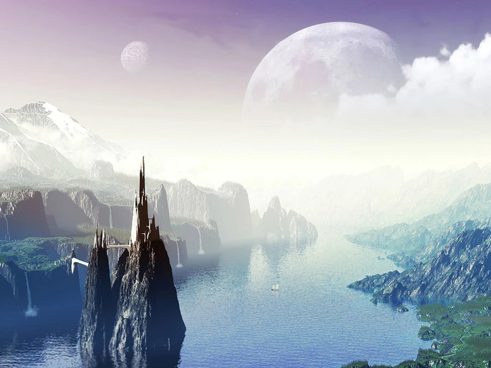

有时我总在幻想，青春会不会因为时间的定格而不会悄然逝去；有时我总在迷茫，要怎样才能把我的青春印记在某个地方，让我可以重温。 于是，我努力奔跑，希望能够跑在时间的前面，这样我就可以悄然的追回我所失去的青春。但回头望去，发现我的青春却已散落一地。 NO.1 如果可以，我愿这样 回头望去人生的白纸上或多或少映现出了好多斑点，它们正如我所经历过的事情一样让我追悔莫及。喧闹的大街上人来车往，街边商店放着 校园音乐，这首歌曲正是我所熟悉的。于是我跟着它的节奏清唱起来，这样的感觉很好，彷佛自己游荡在音乐的节奏当中。恍惚间我看见一群中学 生背着书包从我面前走过，他们欢笑着，相互调侃着。这样的笑声让我很着迷，因为这些我曾拥有过。往事历历在目，只是忽然意识到我的青春已 经在不经意间匆忙溜走。 青春的齿轮在时间的推动下飞快运转，没有过多的停留与守候，我来不及发现来不及回味。我曾问及某人青春是什么？有人说青春就是人正轻 狂的年轻时代；有人说青春就是高声笑语自由自在了无约束；有人说青春就是一直在寻找。我不敢反驳他们的“认为”，毕竟每个人的想法都不一样， 只是在我的思想之中我觉得青春就是疯狂，肆无忌惮，大声哭笑，脑中剩下的仅仅只是很单纯的想法。这就是我眼中的青春。 走进公园满地的黄色枫叶不断的向我透露一个信息，时过境迁，春去冬来。急匆匆的时间爷爷带走了它茂盛的枫叶，任由枫叶散落一地随风飘 散。满地的黄色枫叶加上夕阳落下的光芒存托，其景美不胜收。带上耳机听着优美的旋律，这样的感觉让我很受用。只是脑中忽然闪过一些字句，此 景不正是青春吗？我一直寻找的青春不正是这样的感觉吗？如果可以，我愿这样。但枫叶总有腐烂的一天，而青春也总会失去！看着满地的枫叶我看 见了无奈二字。青春是不是一种幸福，我有这样问过别人。NO.2 我愿面朝大海，春暖花开 “面朝大海，春暖花开”这是一段很温暖的词汇，我想啊海子在写下这首诗歌的时候心情一定是非常的渴望幸福。想拥有幸福是每个人的权利， 只是这个世界上有太多太多的人处在幸福的时候却不懂得珍惜，等到失去的时候才后悔莫及。对于幸福的认识我觉得只要是经历就是幸福，哪怕是别 人给自己小小的一个微笑，仅此这样我都会觉得很幸福。 倘若说正是青春年少也是一种幸福的话，我想这我们都曾经拥有过，毕竟每个人都经历过青春。只是我们在经历青春的时候有没有去珍惜眼前的 幸福，不幸的是现在我回首望去，却发现我的青春散落一地。原来我把幸福遗忘在了以前，以为等我有时间后可以回头寻找，不曾知幸福失去就是失 去了，再去寻找也是徒劳。于是我学着海子的心境写下这样一句话：“我愿面朝大海，春暖花开”，只是不知道自己是否真的能够做到。每每看到海子 的这句话心中总有股暖流窜动。 回想往事一幕幕，我们都曾后悔过，我们都曾遗憾过。只是在此必须奉劝大家，青春一去不复返，愿大家都能珍惜眼前的幸福。因为此时我们没 有压力，可以大声苦笑、可以肆无忌惮、可以疯狂叫嚷、可以无拘无束，等等青春时候的幸福。别像笔者一般待青春失去之时回头望去却发现漫天的 青春早已散落一地。 NO.3 青春之时，却不曾珍惜 其实有的时候我总会有这样的一个想法，独自一个人背着行李带上一个相机，然后游走在世界上的每个乡镇，我想看看那里漫天的枫叶飘落，这 应该是一个非常美丽的景象吧！一个人旅行我曾想会不会很寂寞，会不会在旅途中忽然想家而放弃。一直在寻找，寻找美的景象用相机把它一一记录 下来，然后洗成很大的照片挂在墙上，我会对着照片微微笑，因为我曾欣赏过它的美。 跟朋友说等我到50岁的时候一定要到草原上去生活，那里有着蓝蓝的天空，辽阔的草原、奔驰的骏马、无数的蒙古包，当然还有那些热情好客的 人们。待我老之时我可以抱着一把吉他坐在草原上大声歌唱，我可以抱着我爱的人疯狂的舞蹈。多美啊，只是这些只能等到我老的时候才能去实现。 于是为了这个梦想我现在很努力的去提高我的生活质量，希望可以存下钱来老时去享受这样我认为很美的生活。 当处在幸福的时候，我好想对着天空大声叫喊，我想让世界上所有的人都知道自己的幸福。我是一个喜欢回忆的人，我总愿意沉醉在过去的美好 想象中。呵，可是转眼我却在计划着我50岁之后的事情了，虽然计划出来的景象好美，但怎么都不如我青春年少时候的笑声，笑得是那样的放肆，那 样的顽皮。别了，我的青春，我的青春年少。 